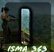

El Real Monasterio de Oia es un antiguo monasterio cisterciense fundado en el siglo XII, situado en la provincia de Pontevedra, en la comunidad autónoma de Galicia, España. Fue declarado Bien de Interés Cultural en 1931.El monasterio de Oia no ha dejado de evolucionar desde el siglo XII hasta nuestros días, alcanzando una superficie construida de más de 7.500 m2 sin contar con la iglesia, actualmente dependiente del obispado.

La Subida a Oia es una prueba de montaña perteneciente al Campeonato Gallego de Montaña en la que cada año se reunen más de medio centenar de vehículos para medirse en la increíble subida.

. Todos sus clientes veneran la exquisita cocina española de Camboa. Es posible que te ofrezcan tomar sus caseras gambas, su atrayente rape y sus sorprendentes tapas: no dudes en probarlas. Sus cocineros preparan aquí una perfectamente elaborada tarta de queso. Pide su extraordinario vino, su estupenda cerveza o su insuperable sangría. Una serie de críticos mencionan que puedes tomar un sensacional café en este lugar.
Cafetería, bocatería, tapas y menú del día. Disponemos de servicio wifi para los clientes, aparcamiento y terraza. Hacemos comidas por encargo y para llevar. Se acepta el pago con tarjeta. Contamos con sellado de loterías.
 |